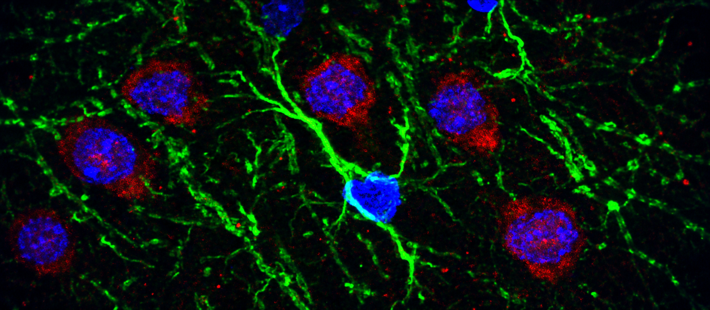

Current lens
Brain resilience
Why do some injured brains endure, adapt, and recover better than others? Resilience can be read through microvascular flow, the blood-brain barrier, cellular response, and recovery.
Neuroscience · Stroke Research · Storytelling
Brain Gardening is a living notebook for brain resilience, microvascular research, useful research tools, and the human side of becoming a scientist.

About
Science is rigorous, but it is also human. This is a place to turn observations into language, language into concepts, and concepts into conversations.
Research lens
Explore the ideas that shape the research questions behind Brain Gardening.
Current lens
Why do some injured brains endure, adapt, and recover better than others? Resilience can be read through microvascular flow, the blood-brain barrier, cellular response, and recovery.
Knowledge garden
Each card opens the existing Firebase-powered board, where posts can be read, written, and saved.
Notes on neuroscience, bio technology, research life, and the questions that keep growing.
Open research board →Clinical research, translational perspectives, and the human context around recovery.
Open clinical board →Practical tools for clearer research routines, writing, data, and everyday computing.
Open tools board →Connect
My CQ — Coffee Quotient — is high. If curiosity brings us together, coffee can start the conversation. If we are 3C ready, let’s call, connect, and collaborate.